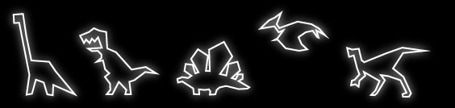
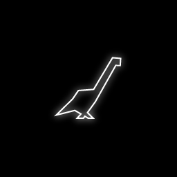
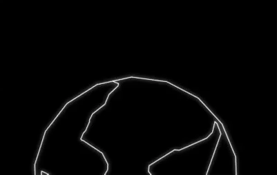
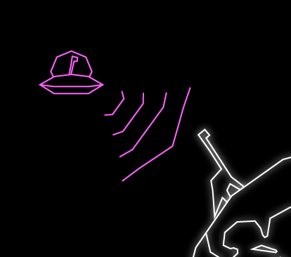
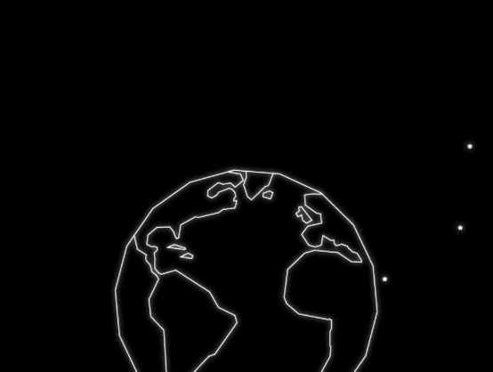
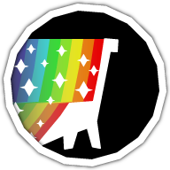
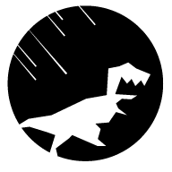

A game pretending to be from 1979, DinoBlaster is about an arcadey struggle for survival as a brontosaurus. Sidestep asteroids, jump into UFOs, stay away from volcanos and stay ahead of the T-Rex. Currently in development for release in 2017.
The design of DinoBlaster pays homage to old vector classics. Its artwork imitates the crude polygons of those titles, which drew directly to the screen with a glowing beam of electrons. Lines are straight; no-fill; single-weight; and don’t self-intersect.
Below is a video and some .gifs of the work in progress.
The main character, left, uses the fewest lines possible. Later dinos bend the rules a little by using more detail.
Running animation gives the illusion of legs crossing without self-intersecting. Two-frame animation stays true to 70s technology.
Run animation in action. The dino leans forward, but doesn’t bob or pitch to keep it readable while it moves and rotates.
Fake but fun tech constraint: Only one color possible at a time. Palette chosen from the Lab color space to ensure similar lightness across the board, which is easier on the eyes. (Including a dark hue like blue would make the UFO seem to flicker).
Animations drawn frame-by-frame in Illustrator, then exported into sprite sheets, a good format for web designers and 2D artists.
App icon. Vector style plus a little Atari box-art nostalgia. Readable and contrasty at tiny physical sizes and against many backgrounds.
The minimal logo explains the concept with great economy and uses the charismatic T-Rex.